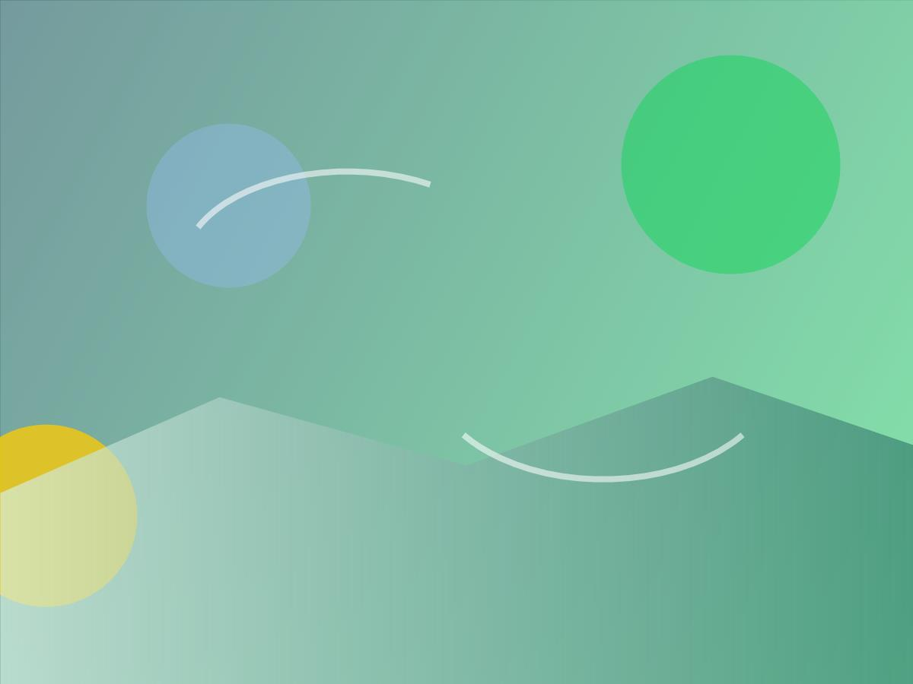
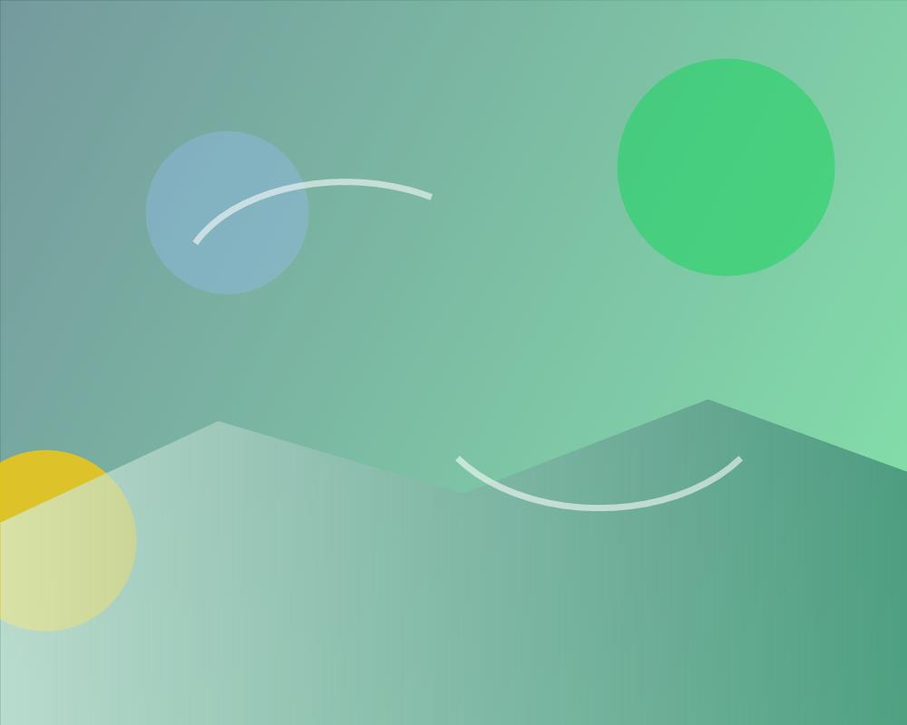
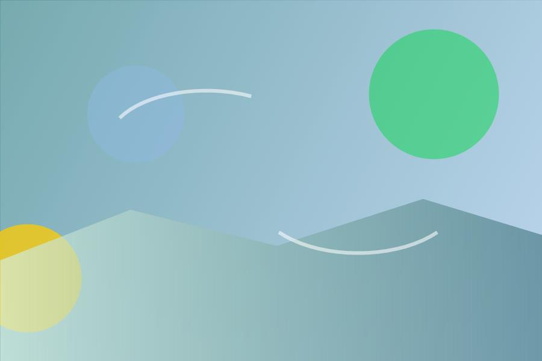
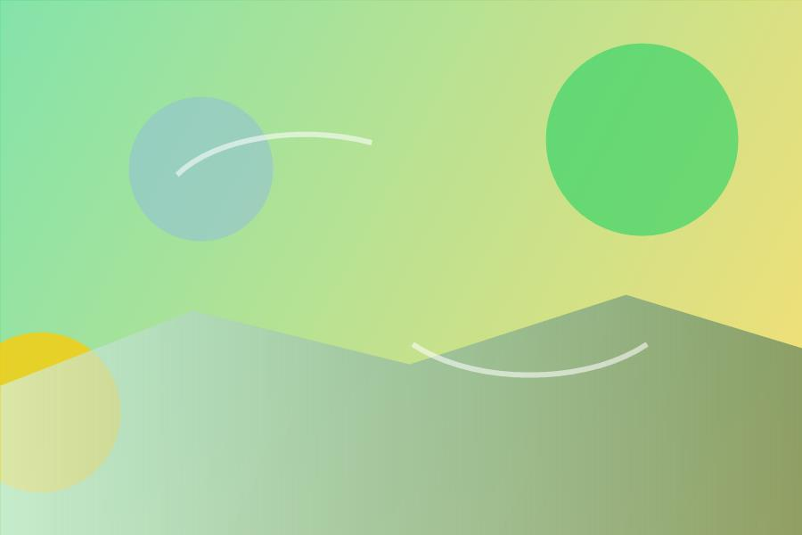
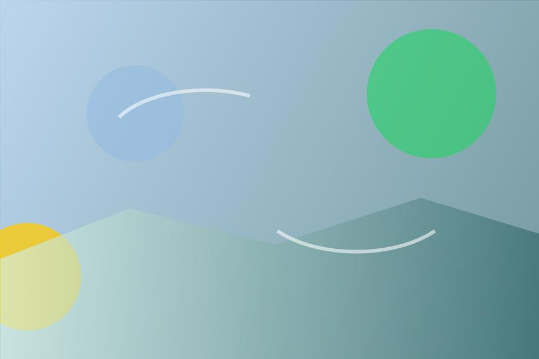

Clínico + terapêutico
Dependência química
Acolhimento para uso abusivo de substâncias, com rotina protegida, avaliação médica e reconstrução de vínculos.
Acolhimento imediato para famílias
Tratamento humanizado para dependência química, alcoolismo, dependência em jogos e saúde mental, com equipe multiprofissional e atendimento 24 horas.

Conheça a clínica
A Clínica de Recuperação reúne acolhimento, rotina terapêutica e suporte clínico para pessoas e famílias que enfrentam dependência química, alcoolismo e transtornos de saúde mental associados.
O atendimento é feito por profissionais de diferentes áreas, com monitoramento contínuo, escuta familiar e plano de cuidado adaptado à necessidade de cada paciente.
Cuidado que sustenta
Tratamentos especializados
Cada frente de tratamento foi desenhada para ajudar a família a reconhecer o problema, agir com rapidez e manter continuidade depois do primeiro atendimento.
Acolhimento para uso abusivo de substâncias, com rotina protegida, avaliação médica e reconstrução de vínculos.
Tratamento de uma condição crônica que pede cuidado multiprofissional, participação familiar e prevenção de recaídas.
Suporte para quadros de maior risco, com contenção terapêutica, rotina assistida e acompanhamento próximo.
Cuidado para perda de controle com apostas, jogos digitais e impulsos, trabalhando limites, gatilhos e rotina.
Estratégias para reduzir danos, lidar com abstinência e fortalecer hábitos de saúde no dia a dia.
Indicado para casos que permitem acompanhamento externo, mantendo consultas e suporte terapêutico programado.
Orientação responsável quando houver indicação clínica, com acompanhamento profissional e critérios claros.
Apoio para sofrimento psíquico grave, ideação suicida e transtornos que exigem rede de cuidado consistente.
Sobre internações
A indicação depende do nível de risco, da disposição do paciente e do contexto familiar. A equipe orienta a família antes de qualquer decisão.
Quando o paciente reconhece a necessidade de ajuda e aceita permanecer em tratamento. É um passo poderoso, especialmente quando a família participa do processo.
Considerada quando há perda importante de controle e risco para o paciente ou terceiros. A família recebe orientação para conduzir a decisão com segurança e respaldo técnico.
Medida judicial para situações específicas, quando alternativas menos restritivas não bastam para preservar vida e segurança. A clínica auxilia com orientação responsável.
Jornada de atendimento
Uma conversa objetiva para entender risco, histórico, urgência e rede familiar disponível.
A equipe orienta se o melhor caminho é ambulatorial, internação ou avaliação médica aprofundada.
O paciente entra em uma programação de cuidado com grupos, atendimentos, monitoramento e convivência.
O tratamento fortalece vínculos, comunicação e prevenção de recaídas para sustentar o recomeço.

Saúde mental
Depressão grave, ideação suicida e esquizofrenia pedem cuidado sem demora, com avaliação profissional e suporte constante para o paciente e para a família.
Em risco imediato de vida, acione o SAMU 192, emergência local ou CVV 188.
Profissionais capacitados
O tratamento combina acompanhamento médico, psicologia, terapia, enfermagem, farmácia, coordenação de grupos, monitores e suporte nutricional.
Ambiente acolhedor
Espaços de convivência, áreas verdes, rotina assistida e atmosfera terapêutica para que o tratamento aconteça com estabilidade.



Perguntas frequentes
Se a situação é urgente, fale com a equipe de plantão. A orientação inicial ajuda a organizar o próximo passo.
Dependência química, alcoolismo, crack, cocaína, tabagismo, jogos, tratamento ambulatorial, internações e saúde mental.
O paciente aceita permanecer em tratamento e participa de um plano terapêutico com suporte da família e da equipe.
Quando há risco, perda de controle ou incapacidade momentânea de reconhecer a necessidade de cuidado, sempre com orientação técnica.
Sim. O plantão recebe famílias todos os dias, em qualquer horário, para orientar consultas, visitas e internações.
Sim. A participação familiar fortalece vínculos, comunicação, adesão ao cuidado e prevenção de recaídas.
Atendimento 24 horas
O botão abaixo abre uma conversa no WhatsApp com uma mensagem pronta para o plantão.